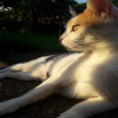
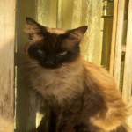
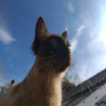
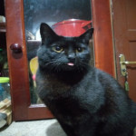
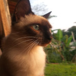

-
Judite
- Bob tail japonês
- Carente
- Mal-humorada
Territorial, mal-humorada e cuidadosa, alma de mãe. Odeia frio e gosta de abraços, gosta de ficar junto dos donos e odeia ficar sozinha, também gosta de caçar e tomar banho de sol.
-
Muka
- Sialata
- triste
- Reservado
Reservado, quieto e tímido. A dona que criou ele não podia ficar mais e teve que doa-lo, e por isso ele tem bastante medo do abandono.Não gosta de barulhos, nem de colo. Adora leite e observar o movimento da rua.
-
Haru
- Sialata
- Solitária
- Tranquila
Filha do muka, é pacífica e se da bem com todos. Não gosta de carinho, colo ou que toque nela. Gosta de ficar sozinha e também gosta da Judite, só toma água se der na boca dela
-
Yoruichi
- Vira-Lata
- Medrosa
- Carente
Gata resgatada da rua, é carinhosa, ressabiada e medrosa. É reservada e não se importa de ser pegada no colo e abraçada. Não se da muito bem com outros gatos e mia bastante
-
Zero
- Vira-Lata
- Esfomeado
- Folgado
Gato abandonado, é muito medroso com estranhos, e quando pega intimidade, é sem vergonha. Come muito, rouba a comida dos outros gatos e acorda os donos quando vê que eles estão dormindo demais.